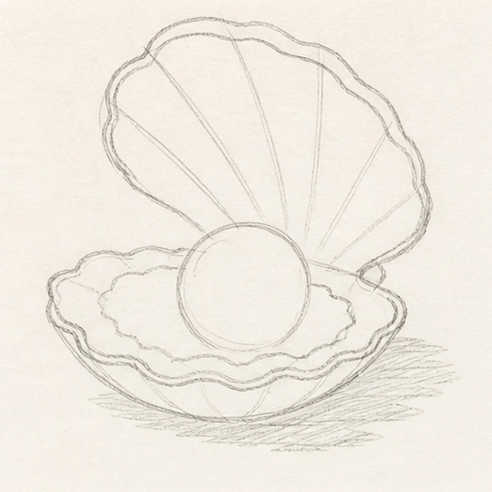
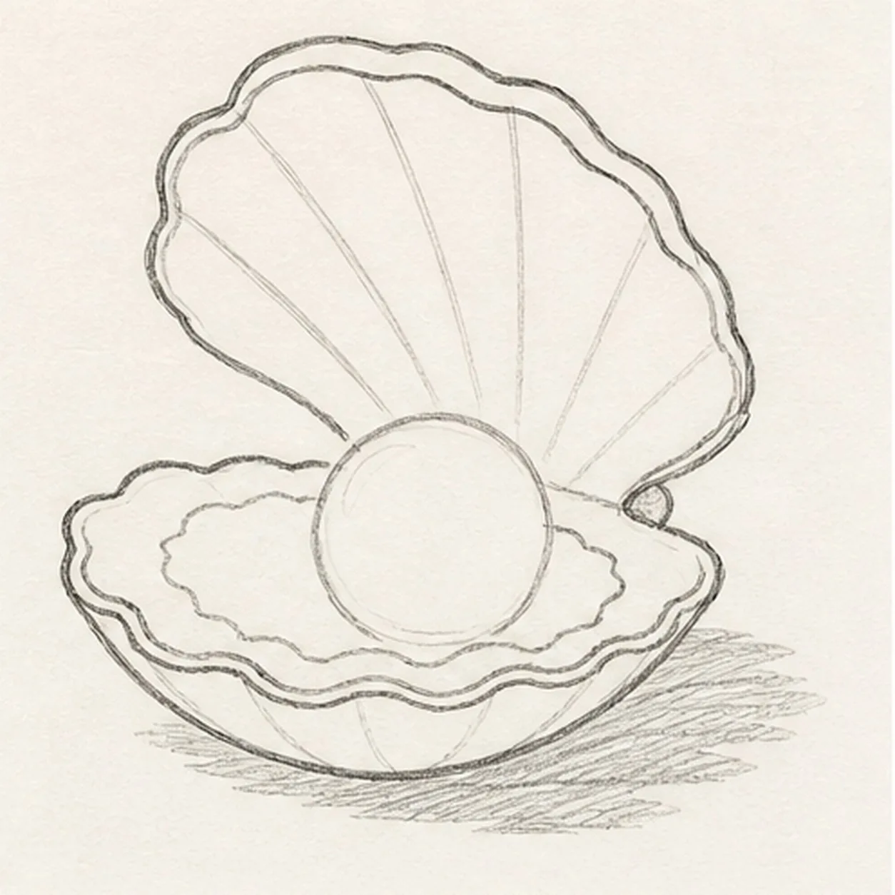
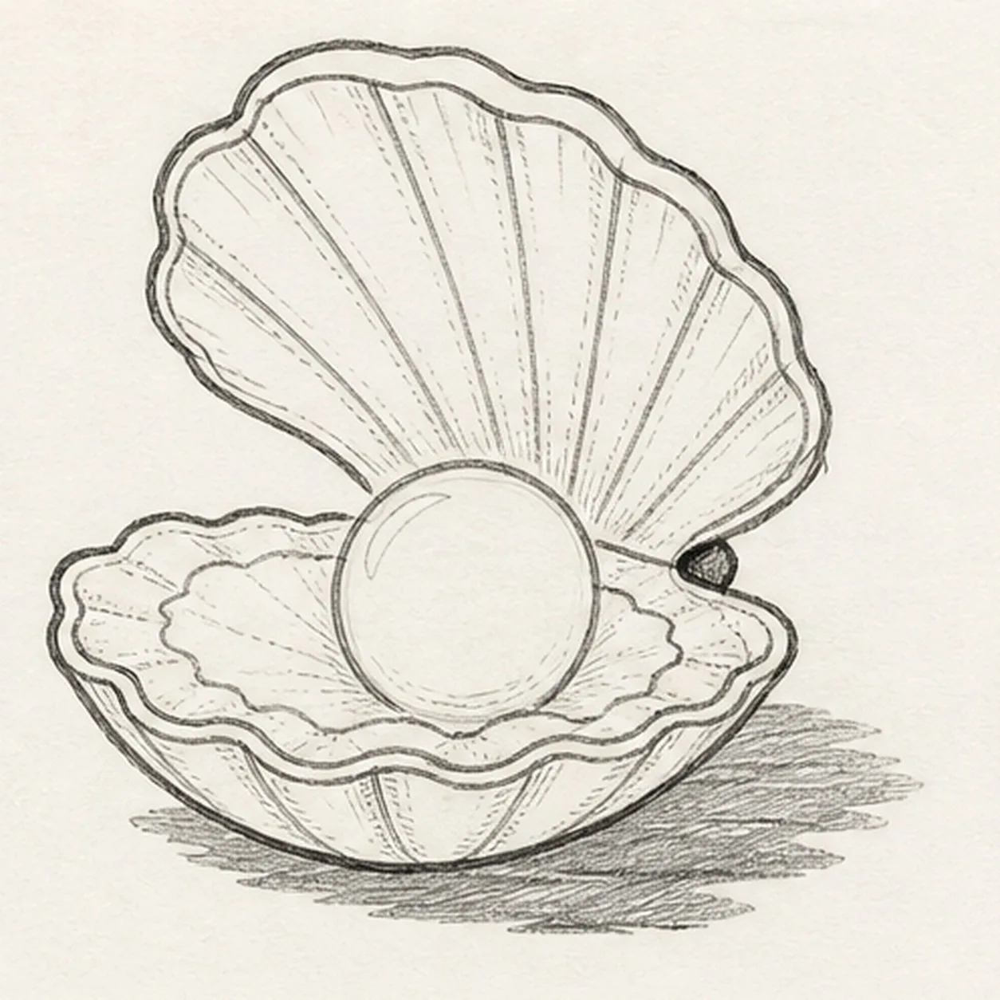
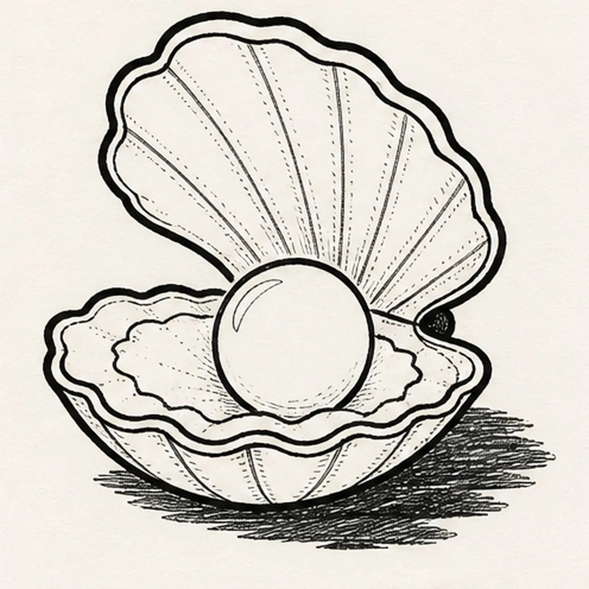
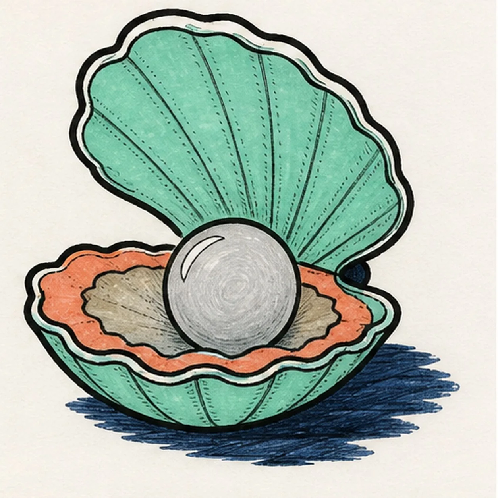

Felt-tip marker mode
Let's draw an oyster with a pearl
Treat this as one playful practice round: sketch the idea loosely, simplify the shapes, then commit with confident marker outlines and bright fills.
-
01

Map the open shell
Use pale construction to place exactly two hinged shell envelopes, the small hinge, one large pearl circle, the scalloped inner lip, broad rib routes, one narrow pearl highlight, one narrow upper-rim highlight, and one broken shadow footprint.
Marker tip: Ghost the raised fan and lower cup before touching down, then compare their widths around the hinge. Reserve the pearl circle now so every lower-shell rib and lip line stops around it instead of becoming a keeper line you must erase later.
-
02

Shape the hinged shell
Wrap the guides with one raised upper shell, one cupped lower shell, one hinge, and one scalloped inner lip while preserving the pearl, rib, narrow-highlight, and shadow routes.
Marker tip: Rotate the page for the broad scalloped edges and let the lower half flatten slightly in perspective. Keep the upper shell attached at the dark hinge, and compare the open wedge behind the pearl so the oyster does not look pasted together.
-
03

Seat the pearl and ribs
Clarify exactly one round pearl, the broad radiating rib rhythm on both shell halves, one narrow pearl highlight, one narrow upper-rim highlight, and the established broken shadow.
Marker tip: Draw a few main rib directions first, then fill the larger gaps with shorter lines. Stop every lower rib at the reserved pearl circle, and keep both highlights slender so they read as shine rather than a pair of eyes.
-
04

Ink the tidal contours
Trace only the established shell halves, hinge, lip, pearl, ribs, highlights, and shadow with thick, slightly wobbly black felt-tip, then add sparse short hatching along the existing ribs.
Marker tip: Ink the hinge and pearl first, let them dry, then rotate the page for the large shell curves. Give the outside silhouette the heaviest line and keep the interior ribs lighter so the open shell retains depth.
-
05

Fill the tide-pool palette
Fill the established shell seafoam, inner lip coral, hinge and shadow deep navy, and the pearl plus lower shell bed softly gray while preserving visible marker streaks and both narrow paper highlights.
Marker tip: Pull the seafoam strokes outward along the ribs and the coral strokes around the scalloped lip. Let each area dry before filling beside it, and use one extra gray pass only along the pearl's lower edge so it stays round.
-
06
![Handmade face-free felt-tip marker drawing of one open oyster in a three-quarter view with exactly two hinged shell halves, one raised seafoam fan shell, one cupped seafoam lower shell, one dark navy hinge, exactly one large pearl-gray pearl seated in the center, one coral scalloped inner lip, one muted-gray lower shell bed, broad radiating ribs, one thin white crescent highlight on the pearl, one thin white highlight along the upper rim, thick imperfect black outlines, visible marker streaks, and one broken deep-navy ground shadow](../assets/cartoon-oyster-with-pearl-finished-v1.webp)
Polish the hidden pearl
Thicken selected established black edges, even the existing fills, deepen the rib hatching and shadow, sharpen the same two narrow highlights, and erase only pale guides that distract.
Marker tip: Count two shell halves, one hinge, one pearl, one lip, and one shadow before stopping. Change the tide-pool colors if you like, but keep the same face-free opening, centered pearl, and handmade marker grain.


![Handmade felt-tip marker drawing of one face-free upright cartoon hourglass with exactly two rounded teal caps, exactly two attached coral side pillars, one pale-aqua pinched glass vessel, one curved upper golden-yellow sand bed, one centered falling sand stream, one rounded lower sand pile, exactly two open-paper glass highlights, exactly three yellow four-point sparkles, exactly four deep-navy cap notches, thick imperfect black outlines, visible directional marker texture, and one broken deep-navy ground shadow](../assets/cartoon-hourglass-with-flowing-sand-finished-v1.webp)